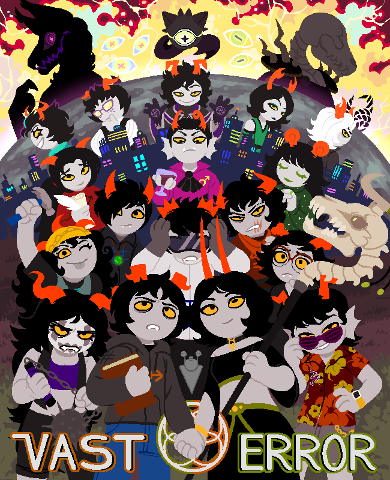
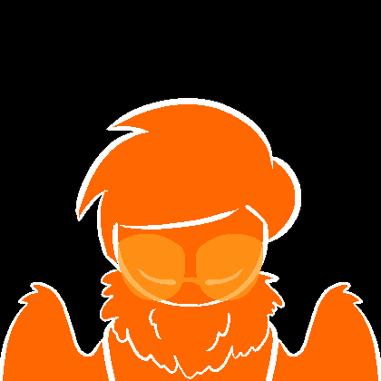
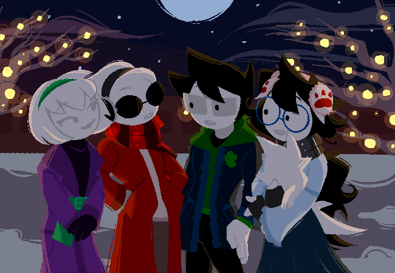

Homestuck is a property that amassed a dedicated, passionate base of fans, many of whom are artists themselves. As such, it has been subject to a wide variety of fan creations over the years, from comics, to songs, to games, and just about any other creative medium one could imagine. Here, I'm going to list some of the most notable creations from the fandom in order to showcase the immense number and variety of fan-created works Homestuck has spawned.
Comics
One of the most pervasive forms of fan content is the fan comic. The majority of these comics are uploaded to the site MSPFA (MS Paint Fan Adventures). Listed here are a few of the most widely praised and discussed of these fan adventures.

Vast Error
Perhaps the most ambitious of any fan work, Vast Error started over a decade ago and quickly grew much beyond its original scope, becoming a distinct media property of its own.
Description: " Vast Error is a story where, quite simply, "Twelve trolls play a game." This description is a tongue-in-cheek reference to the original description of Homestuck (which Vast Error is inspired by) as well as to poke fun at the traditional plot of the average fan-made Homestuck comic, referred to as a "Sburbventure." Vast Error is the 2,302nd fan adventure created on its host site, MSPFA, and is currently the most popular ongoing adventure on the site with over 3,000 favorites. "

The Crow Strider AU
One of the early examples of a popular "alternate universe" fan adventure, branching off at a certain point in the story to take it in a completely unique direction.
Description: " The ALT-Timeline where things take a turn for the better... eventually. An alternative timeline where Davesprite rebuilds his identity during the trip through the void with John and Jade. A peaceful and funny journey... until they reach the new session. This is just the first of many changes that this timeline will experience and that will put it's veracity to test. "

Homeslice
Homestuck has a community of people with wildly varying opinions, both positive and negative, especially concerning its ending and its official sequel. Many have taken a swing at rewriting the ending to the comic and even creating fan-made continuations beyond where the official story ends. Homeslice is one of the more recent and popular examples of this, and is a fan comic that chooses to focus on creating a "slice of life" style continuation to the original.
Description: " follow the lives of 12 reckless adults living on earth c, as they indulge in adventures which make their lives both troublesome and exciting "
Animation
- [S] Rex Duodecim Angelus led by Christian Ertvaag - A collaboration between several artists and animators with the goal of emulating the official Homestuck animations as closely as possible, meant to fill in a gap from a specific point in the story.
- A Lullaby for Gods by guzusuru - This animator became very popular in the fandom, and would later go on to be hired to do official animation work for Homestuck and some of its related media.
- Tostitos & Cheetos by bb-panzu - A much more modern animation from 2024, and an example of how even after so many years, people continue creating artwork based on Homestuck.
Music
Music is a very important part of Homestuck; all of its official animations and minigames are set to a soundtrack which spans over a dozen albums. Early on, fans were brought onto the team to create music for these albums, cultivating a community with a massive musical output. The amount of music created either for or directly inspired by Homestuck is far too large to even narrow down - so much so that there is an entire wiki dedicated just to the music of Homestuck, both official and fan-created.